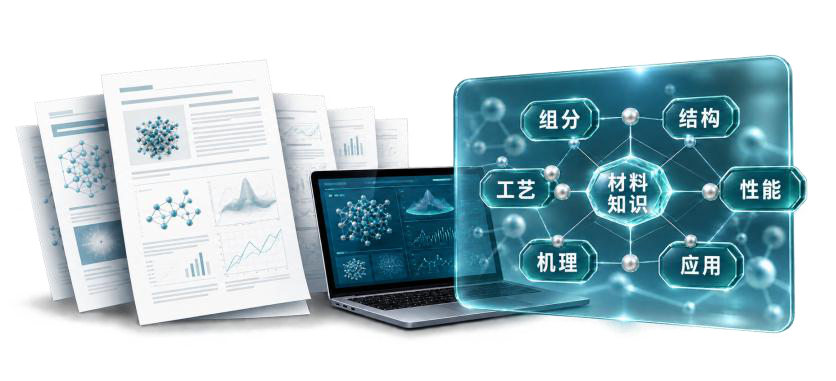
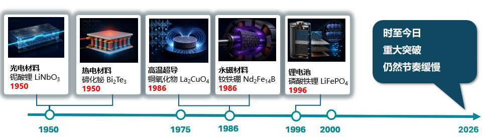
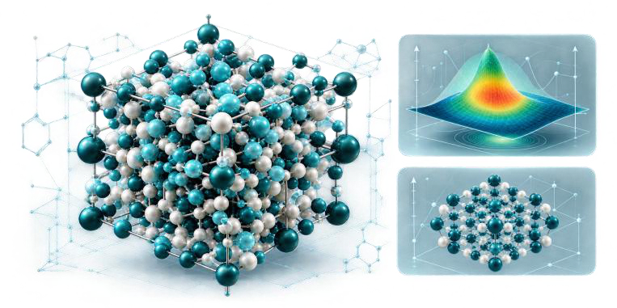
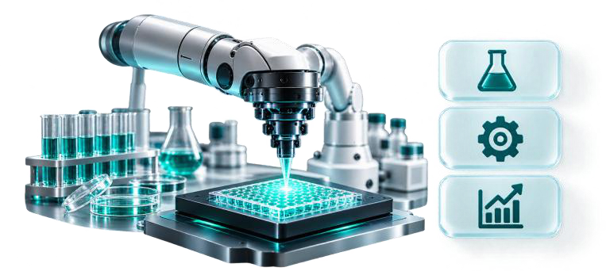
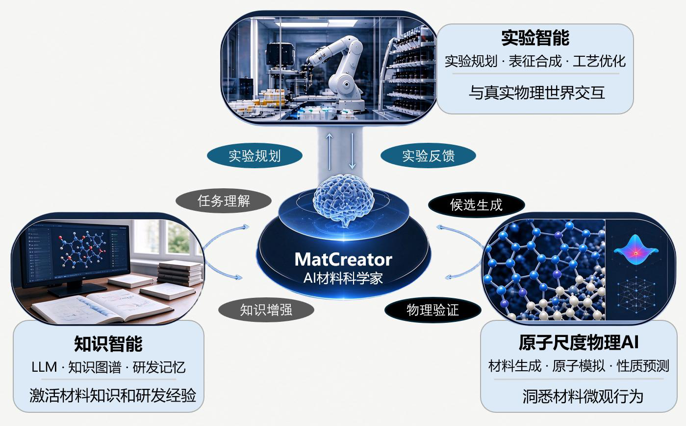
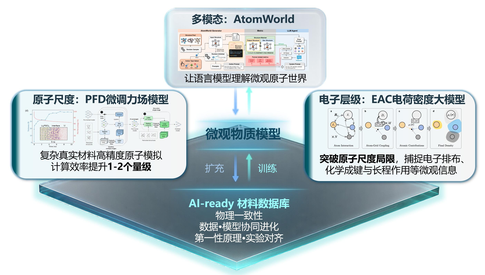
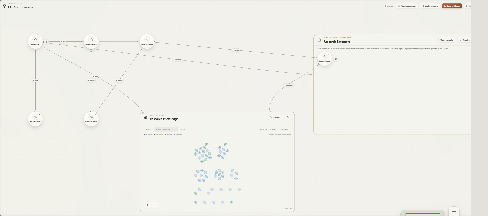
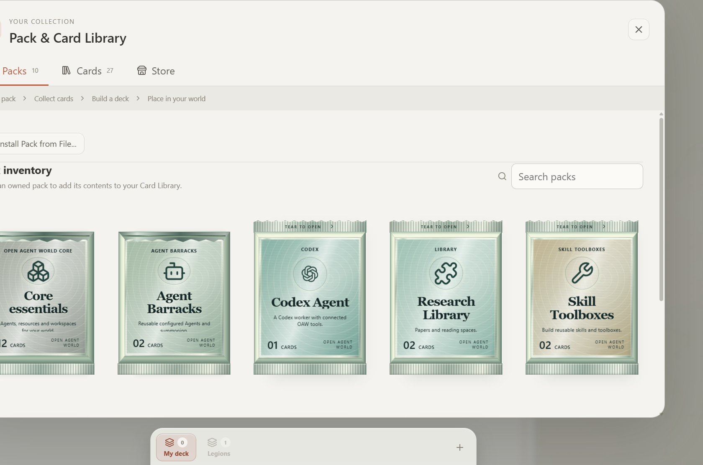
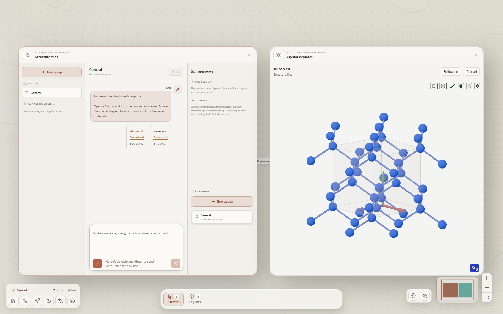

读READ
知识智能文献 · 专利 · 实验记录
企业最值钱的经验，往往躺在网盘里的 Excel、纸质图表和报告 PDF 中。 知识智能把这些非结构化记录解析成可检索、可计算的材料知识， 让每一次新实验，都站在全部历史数据之上。

质元科技MATTERIUM
从理解物质，到创造未来
点击或滑动
苏州质元科技有限公司 · MATTERIUM
固态电池、超导、下一代芯片——这场产业变革的瓶颈，都指向材料。 而一种新材料从实验室走到产线，平均要等 10–20 年。 我们把读文献、算结构、做实验交给同一个 AI 科学家，把这个等待当作一个可以被压缩的工程问题。
线上服务正与首批合作伙伴验证 · 面向科研团队与企业
AI 材料科学家
把查文献、做计算、进实验，交给同一个智能体。
每一次产业革命都始于一种新材料。而今天，研发速度远远跟不上需求。
新能源、半导体、高端装备，都卡在几类关键材料上。 旧的研究范式已经严重限制了材料领域乃至人类科技的进步速度—— 一次重大突破，往往要消耗一代研究者的职业生涯。
离子导率 > 1 mS/cm、兼具空气稳定性与力学性能的固态电解质，仍在等待突破。
下一代芯片的瓶颈，越来越集中在几类关键电子材料上。
耐受 1400℃+ 的轻质隔热瓦、抗中子辐照的聚变堆材料，需求明确而供给缓慢。
低成本高效率的柔性光伏、常压高温超导——每一个都是产业级机会。

一个材料问题，要经历查文献、做计算、进实验三轮循环。我们把三轮循环接成一条流水线：上一轮的结果，直接成为下一轮的输入。
企业最值钱的经验，往往躺在网盘里的 Excel、纸质图表和报告 PDF 中。 知识智能把这些非结构化记录解析成可检索、可计算的材料知识， 让每一次新实验，都站在全部历史数据之上。

自研电荷密度大模型（EAC-Net）与原子尺度微调力场（PFD）， 把物理规律写进模型内部，让语言模型真正“看见”微观原子世界。 表界面等复杂体系的模拟效率提升 1–2 个量级，筛选结果经得起实验复核。

AI 材料科学家 MatCreator 沉淀了数千条专家真实科研轨迹， 能生成实验方案、解析 XRD 与 SEM 谱图。每一轮实验的结果都自动回流数据库， 用得越多，算得越准。



点击放大，看看 AI 材料科学家日常在做什么。



团队源自中国科学技术大学苏州高等研究院与苏州国家实验室，十余年“AI + 材料”积累，核心技术自主可控。
插件式智能体框架 open-agent-world 上线：智能体、工具与数据在同一张画布上协作，MatCreator 走进科研一线。
与头部固态电池材料企业完成 POC：知识沉淀、候选筛选、XRD/SEM 解析三类场景落地，潜在合同价值 100 万元/年。
智能研发工作台筹备中——企业知识库、在线材料计算与智能解析服务将逐步开放。
源自中科大与苏州国家实验室，十余年「AI + 材料」积累，核心技术自主可控。
质元科技是一支横跨材料物理、AI 算法与算力工程的全栈团队。我们把实验室里的方法论，做成科研团队与企业可以直接使用的研发系统。
中科大长聘正教授、苏州国家实验室双聘研究员；Science / Nature 等顶刊论文 110+。
MatCreator 核心开发；苏州国家实验室副研究员，主持国自然青年基金。
连续创业者，深耕半导体制造；主导长江存储等头部企业 AI 平台交付。
与新加坡国立大学、多伦多大学、洛桑联邦理工等共建智能实验平台。
企业知识库、在线材料计算与智能解析正在阿里云上部署，首批合作伙伴已经在用。 服务正式开放后，入口会放在这里。
如果你手里有一批“算不动、理不清”的材料数据，欢迎聊聊。
把你的材料问题，带进这条工作流。
线上服务开放时，我们会第一时间通知你。首批名额面向科研团队与企业研发部门。
服务开放时，通知将发送到你的邮箱。